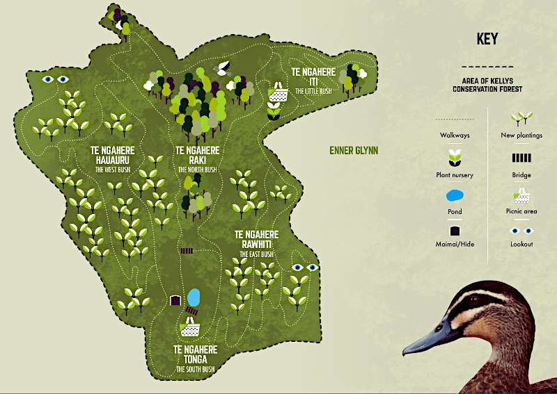
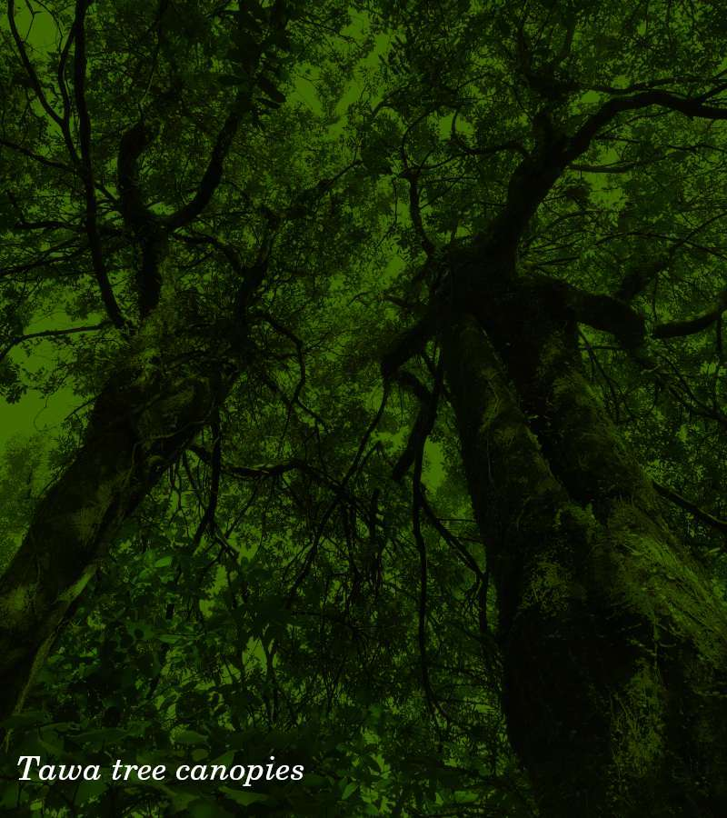

--- 
title: Kellys Conservation Forest 

--- 
{% include _head.html %}
<main>
    <section>
        <h1>An Award-Winning Conservation Project</h1>
        
        <h2>Kellys Conservation Forest covers more than 10 hectares of native bush, located at Enner Glynn, Nelson.</h2>
        <p>For over 30 years, the Kelly family, assisted by many community groups, has worked to clear the weeds and replant areas around the original forest, It is now more than four times its original size. They have built trails, picnic areas, steps and
            bridges, and welcome over 1000 visitors every year through open days, educational visits and school plantings.</p>
        <p>Eco-sourced native trees are grown onsite, for replanting every year, enhancing this Significant Natural Area which is protected in perpetuity by a Department of Conservation covenant.</p>
        <p> Kellys Forest is a special place where people can freely enjoy walking in the forest with their families or having a picnic.</p>
        <p> Many groups of both adults and children have planted trees in Kellys Forest, and have used this as an educational resource over the years. They continue to do so, making this a long standing valuable community education, conservation and recreational
            asset.
        </p>
        <p>There is considerable inter-generational community investment in the project, as the children who planted trees in the forest 20+ years ago are now bringing their own children to visit, walk and plant.
        </p>
    </section>
    <div class="divider"></div>
    <section>
        <h1>Biodiversity is abundant with native birds, lizards and insects</h1>
        <h2>Can you spot shells of the endangered powelliphanta?</h2>
        
        <h2>Explore the Weta Houses</h2>
        
        <h2>Or even see the rare mohua</h2>
        
        <p>Over 100 different species of native plants grow in this unique area of pre-European native bush. Covered in mature lowland tawa/titoki/matai, this is one of the few areas of this type left in the region.</p>
        <p> Many rare species call this remarkable place home, including the endangered the Nelson Green Gecko and giant earthworms.
        </p>
        <p>Shells of the endangered Powelliphanta (giant snail) have been found in the forest in good condition, suggesting a live population may still exist. The endangered Parera ducks breed in the valley. The forest houses rarely found fungi and orchids.</p>
    </section>
    <div class="divider"></div>
    <section>
        <h1>Diagram showing the different areas of the Forest</h1>
        
    </section>
    <div class="divider"></div>
    <section>
        <h1>An aerial view of the Forest</h1>
        <p>The yellow line roughly emcompasses the conservation forest. The older, original area of the forest can be seen in the middle of the top part of the image. More newly planted areas can be seen on the left and the right boundaries of the forest.</p>
        
    </section>
    <div class="divider"></div>
    <section>
        <h1>Endorsements</h1>
        <p class="endorsement">
            "This area of mature lowland tawa/titoki/ matai forest is an excellent example of what would have clothed much of the lower altitude areas around Nelson city. Sadly, few of these areas now remain…"
            <span class="endorsement-author"> - Tom Stein from the QEII Trust</span></p>
            
        
     
        <p class="endorsement">
            "An excellent example of a lowland forest type almost totally depleted in the Nelson area."
            <span class="endorsement-author"> - Robert Fryer of Futurecology</span></p>

    </section>
    </div>
</main>
{% include _foot.html %}